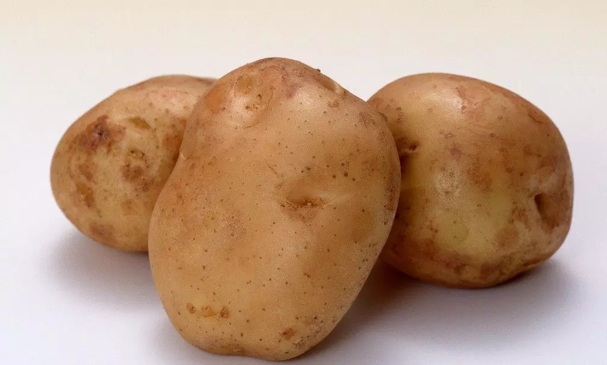
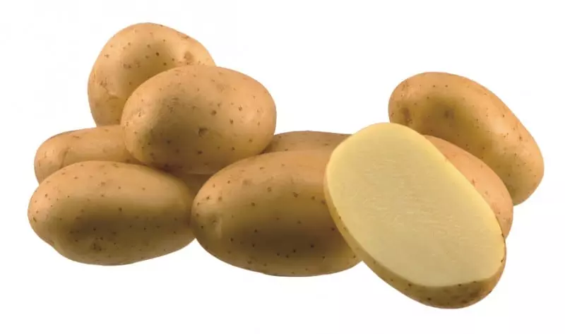
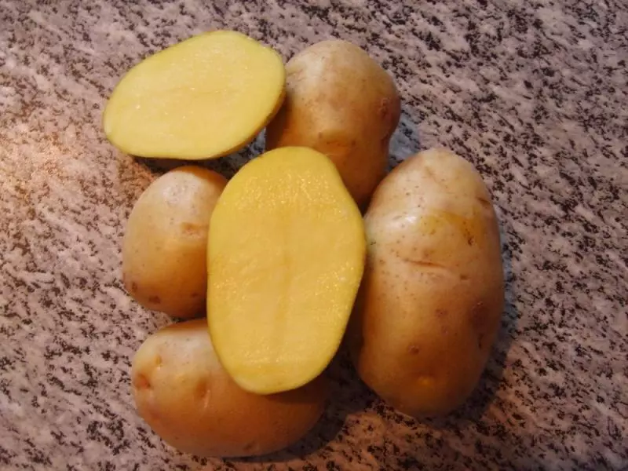

Картошоп
Единственный и неповторимый

Седов
Высокорослый. Цветы белые. Хорошо храниться. Клубнеплод белый, весом до 140 г
20 руб/кг

Эрроу
Голландский сорт. Урожай можно собирать 2 раза – 35 – 60 т/га. Клубни жёлтые снаружи. При тепловой обработке мякоть не темнеет. Рассыпчатый
18 руб/кг

Импала
Засухоустойчивый. В регионах с тёплым климатом можно собрать 2 урожая. Обладает хорошими гастрономическими качествами. Урожайность – 15 — 35 т/га. Высокорослый. Цветы белые
15 руб/кг